건강 지표 상세 · 실제 앱 비교
HRV · 네 기기의 개편 실제 화면
75 ms 심박변이도의 원래 파형 아이콘과 강조된 히어로를 확인했습니다. iPhone은 11월 2일 핵심 검사 5개, Duo 접힘·펼침은 같은 날 HRV 확인 검사 각 1개가 통과했습니다. iPad 이미지는 10월 31일의 실제 개편 촬영본이며, 새 11월 2일 실행으로 표시하지 않습니다.
왼쪽 기준 화면은 모두 기존 iPad · 10월 31일입니다.검증된 기존 iPhone·Duo HRV 촬영본이 없어 같은 원본 iPad 화면을 참고로 표시했습니다. 다른 기기·화면 크기의 비교이며, 네 기기 각각의 동일 기기 전후 비교가 아닙니다. 수면 화면을 HRV 원본으로 대신하지 않았습니다.
iPhone
기존 iPad · 10/31 참고 · 다른 기기·뷰포트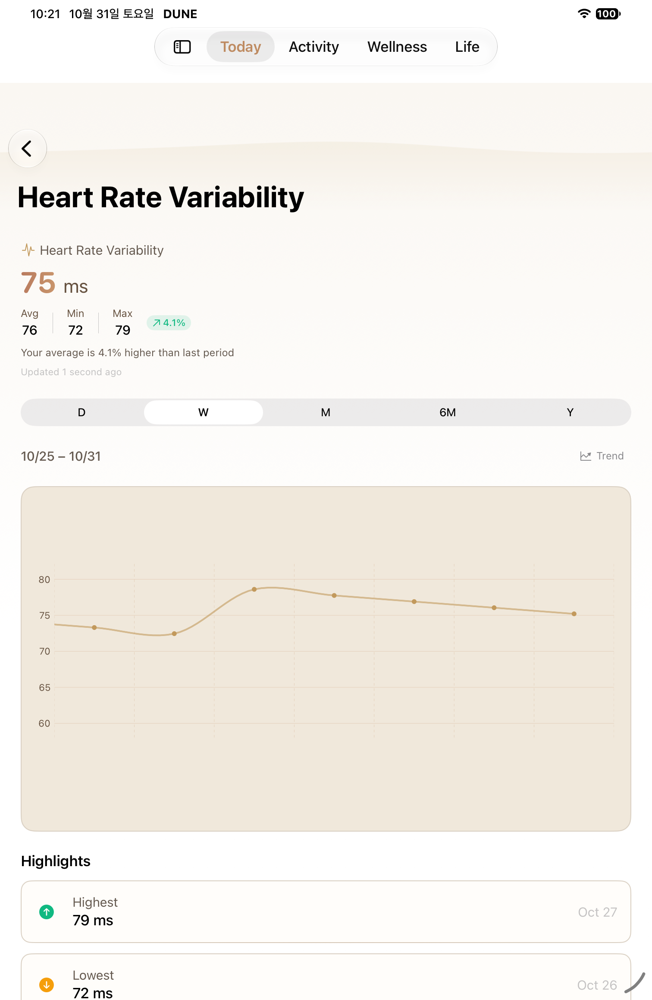
실제 소스0dc77dc4 · 원본8D729315-E53D-4986-840C-B48CA87EE5C4.png
다른 기기의 기존 촬영본으로 표시하지 않습니다.iPhone 개편 · 11월 2일 실제 화면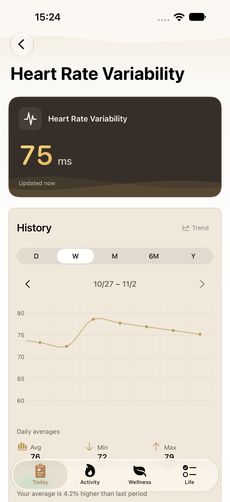
실제 소스c0b51078 · 2026-11-02T15:24:17.503000+09:00
DUNEUITests/MetricDetailRedesignTests/testSelectedMetricIdentityAndCapture
T06-hrv-initial
PNG SHA256 fcb145b45f193203aa904f7d9a0f5382d1bd8fdc9f8dd6bd54b033658ab5bb68 iPad
기존 iPad · 10/31 참고 · 같은 기기 분류실제 소스0dc77dc4 · 원본8D729315-E53D-4986-840C-B48CA87EE5C4.png
다른 기기의 기존 촬영본으로 표시하지 않습니다.iPad 개편 · 10월 31일 과거 실제 화면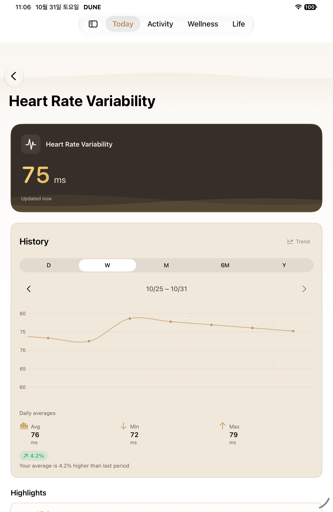
실제 소스f9f1d852 · 2026-10-31T11:06:14.016000+09:00
DUNEUITests/MetricDetailRedesignTests/testAllMetricIdentitiesAndCaptures
T06-hrv-initial
PNG SHA256 68fc1cfea1bd61548dcde212b73687f4242efce5768f4145dca7433e269c5255 Duo 접힘
기존 iPad · 10/31 참고 · 다른 기기·뷰포트실제 소스0dc77dc4 · 원본8D729315-E53D-4986-840C-B48CA87EE5C4.png
다른 기기의 기존 촬영본으로 표시하지 않습니다.Duo 접힘 개편 · 11월 2일 실제 화면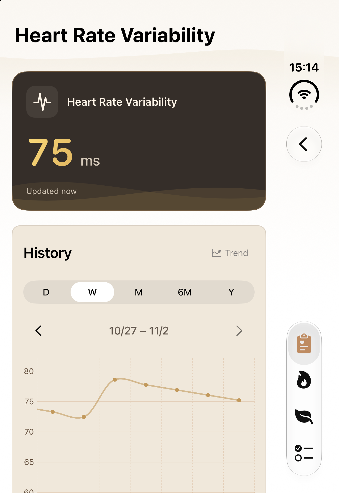
실제 소스c0b51078 · 2026-11-02T15:14:18.644877+09:00
DUNEUITests/MetricDetailRedesignTests/testSelectedMetricIdentityAndCapture
DUNE_VISUAL_AUDIT_READY root after setup -[MetricDetailRedesignTests testSelectedMetricIdentityAndCapture] [DUNEUITests/UITestBaseCase.swift:145] DEADLINE=1793600086.310931
PNG SHA256 e83990ad8809df64073298cf882c83cc0febdda7c8a9bcbd2e07b56b9c3d957d Duo 펼침
기존 iPad · 10/31 참고 · 다른 기기·뷰포트실제 소스0dc77dc4 · 원본8D729315-E53D-4986-840C-B48CA87EE5C4.png
다른 기기의 기존 촬영본으로 표시하지 않습니다.Duo 펼침 개편 · 11월 2일 실제 화면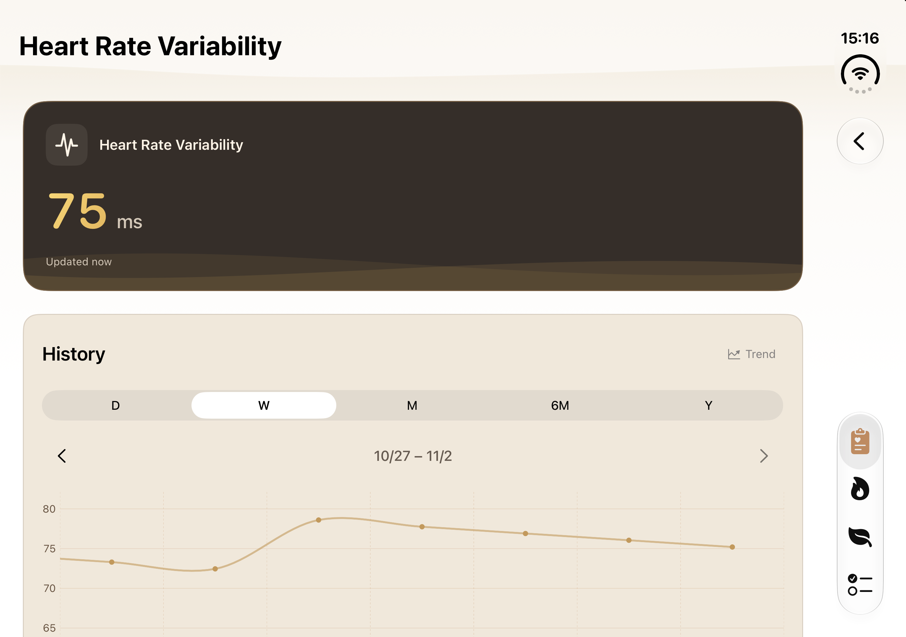
실제 소스c0b51078 · 2026-11-02T15:16:25.529016+09:00
DUNEUITests/MetricDetailRedesignTests/testSelectedMetricIdentityAndCapture
DUNE_VISUAL_AUDIT_READY root after setup -[MetricDetailRedesignTests testSelectedMetricIdentityAndCapture] [DUNEUITests/UITestBaseCase.swift:145] DEADLINE=1793600214.657589
PNG SHA256 0ca9566d7ca61d286c8618359a4b155542fc7ebd8e0d6d3bc84d72afdaf34e0a 기기별 확인 범위는 HRV입니다. iPhone의 5개 검사는 HRV 진입·기간 선택·기간 이동·어두운 화면 및 체중 최대 글씨 도달을 포함하며, 18개 모든 지표를 네 기기에서 실행한 결과가 아닙니다. Duo는 0° 활성 LCD·180° 활성 LCD-1과 각 2개의 strict root/teardown PNG·AX 쌍을 확인했습니다. 그 사이 지표 초기·하단 이미지는 한 검사에서 수집했으며 모든 스크롤·어두움·최대 글씨를 검사한 것으로 확대하지 않습니다.
18개 지표 · 10월 31일 iPad 실제 비교
2026년 10월 31일에 촬영한 기존·개편 앱의 18개 지표 화면을 모았습니다. 11월 2일은 이 비교를 정리한 날짜입니다. 각 지표의 초기 화면과 스크롤한 하단 화면을 나란히 볼 수 있습니다.
검증 범위이 자료는 iPad mini의 밝은 기본 글씨 화면입니다. 18개 지표를 한 검사 메서드 안에서 순회했으며, 18개 독립 테스트가 통과했다는 뜻이 아닙니다. iPhone·Duo 접힘·펼침의 검증이나 새 11월 2일 실행 결과로 표시하지 않습니다.
기존 17개 지표는 0dc77dc4, 별도 수영 입력은 f06d4a73입니다. 개편 지표 행렬은 f9f1d852이며 러닝·수영 거리의 하이라이트는 수정 후 61bdbf84 캡처를 사용했습니다. 실제 소스는 이미지마다 표기합니다. 현재 main 전체와 같다는 검증은 이 갤러리의 범위가 아닙니다.
심박변이도
Heart Rate Variability · 입력 표시 기준 75 ms
기존 화면도 심박변이도 75 ms입니다. 수면 화면을 HRV의 기존 화면으로 재사용하지 않았습니다.
심박변이도 · 기존 초기 화면실제 소스 0dc77dc4 · 2026-10-31T10:21:25.661000+09:00
동작 T06-hrv-initial
원본 8D729315-E53D-4986-840C-B48CA87EE5C4.png
원본 크기로 보기심박변이도 · 개편 초기 화면 실제 소스 f9f1d852 · 2026-10-31T11:06:14.016000+09:00
실제 소스 f9f1d852 · 2026-10-31T11:06:14.016000+09:00
동작 T06-hrv-initial
원본 B0E35B44-A579-42C0-A700-3BD4F313FC30.png
원본 크기로 보기
하단 화면 비교 펼치기
심박변이도 · 기존 하단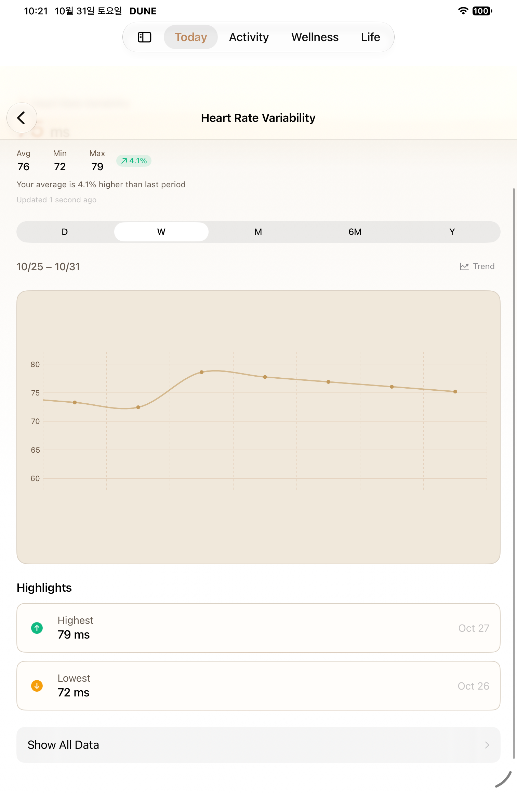
실제 소스 0dc77dc4 · 2026-10-31T10:21:26.892000+09:00
동작 T06-hrv-lower
원본 D62DA7B8-5FC6-4539-88EC-BE69ED0FC170.png
원본 크기로 보기심박변이도 · 개편 하단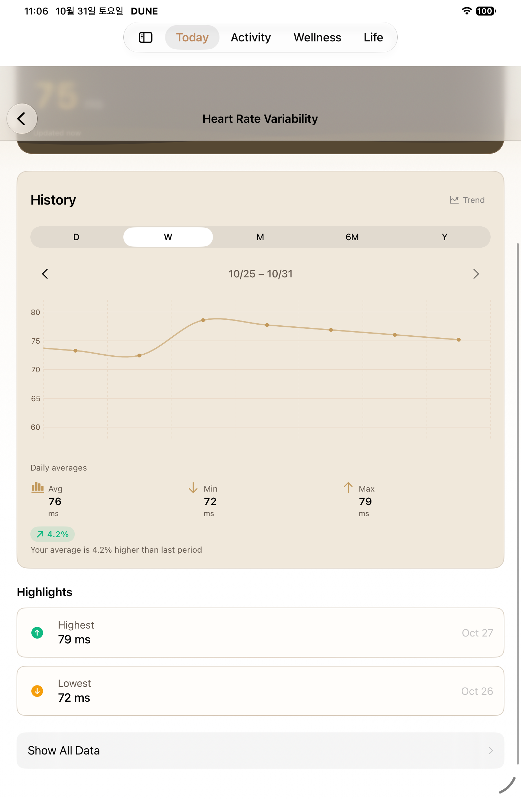
실제 소스 f9f1d852 · 2026-10-31T11:06:15.509000+09:00
동작 T06-hrv-lower
원본 B53D6663-F08D-4490-BDA0-EA4BF80C31AE.png
원본 크기로 보기 안정시 심박
Resting Heart Rate · 입력 표시 기준 52 bpm
안정시 심박 · 기존 초기 화면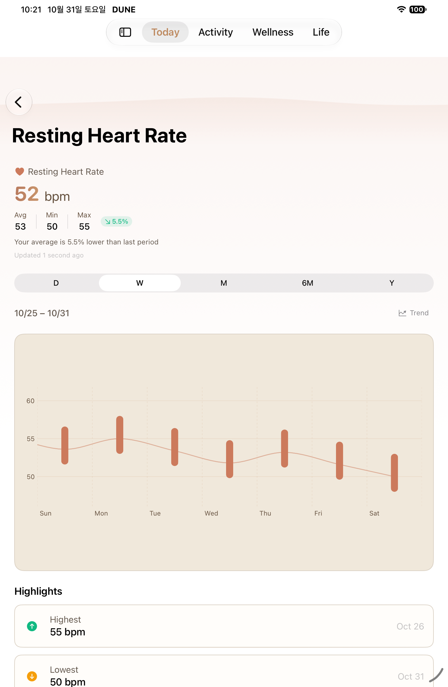
실제 소스 0dc77dc4 · 2026-10-31T10:21:48.332000+09:00
동작 T06-rhr-initial
원본 59AEB8A6-DEF1-4281-B580-1B950A43CFBD.png
원본 크기로 보기안정시 심박 · 개편 초기 화면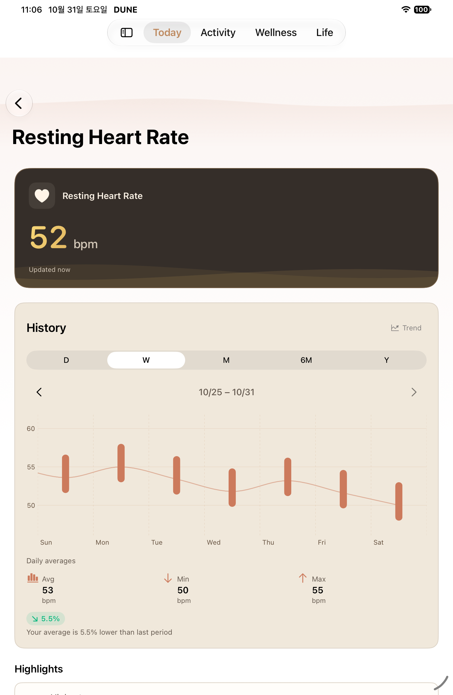
실제 소스 f9f1d852 · 2026-10-31T11:06:40.030000+09:00
동작 T06-rhr-initial
원본 D51D3ADD-0322-41A1-81BA-EB39659B4E2B.png
원본 크기로 보기
하단 화면 비교 펼치기
안정시 심박 · 기존 하단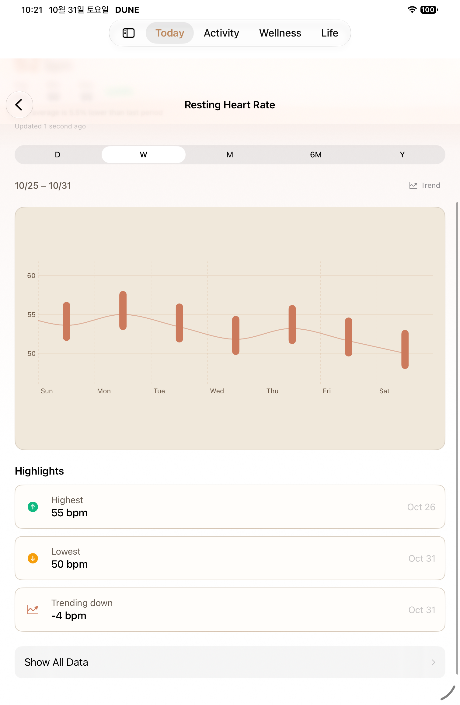
실제 소스 0dc77dc4 · 2026-10-31T10:21:49.596000+09:00
동작 T06-rhr-lower
원본 B819BA68-A4A6-4A9C-82D8-B47513068479.png
원본 크기로 보기안정시 심박 · 개편 하단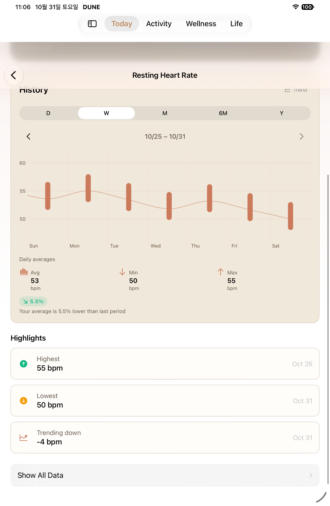
실제 소스 f9f1d852 · 2026-10-31T11:06:41.441000+09:00
동작 T06-rhr-lower
원본 45E28A6E-7446-41EF-AE2B-97682CA3D29C.png
원본 크기로 보기 심박수
Heart Rate · 입력 표시 기준 72 bpm
심박수 · 기존 초기 화면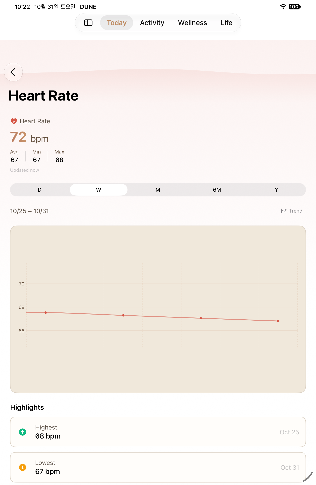
실제 소스 0dc77dc4 · 2026-10-31T10:22:03.151000+09:00
동작 T06-heartRate-initial
원본 B052B6DC-72A4-46D0-9D7D-38BE68722372.png
원본 크기로 보기심박수 · 개편 초기 화면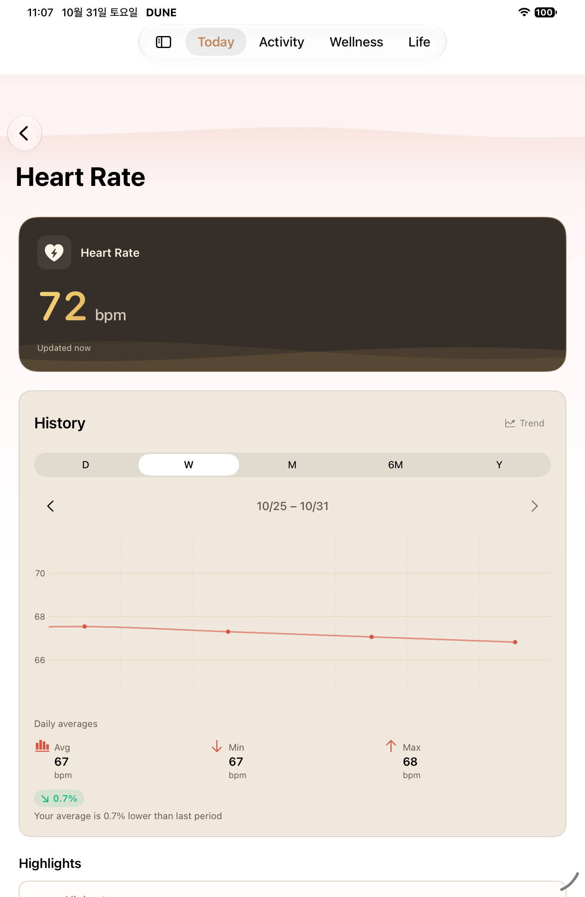
실제 소스 f9f1d852 · 2026-10-31T11:07:05.244000+09:00
동작 T06-heartRate-initial
원본 986467FB-D301-4487-9971-521036AE3907.png
원본 크기로 보기
하단 화면 비교 펼치기
심박수 · 기존 하단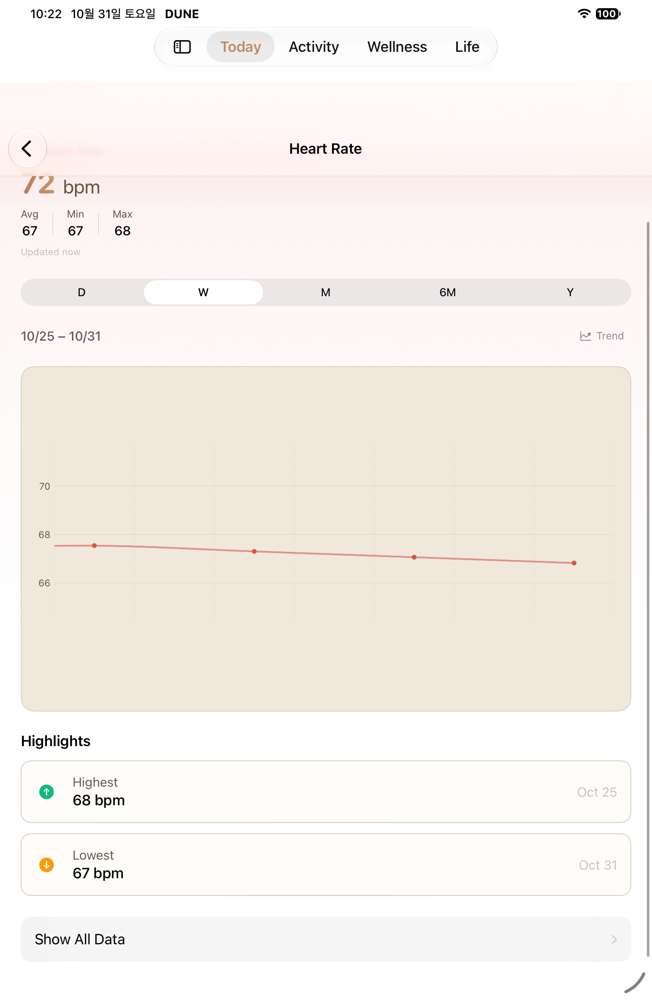
실제 소스 0dc77dc4 · 2026-10-31T10:22:04.357000+09:00
동작 T06-heartRate-lower
원본 CAE69D71-BD4E-4208-B6A4-A384EB9CE156.png
원본 크기로 보기심박수 · 개편 하단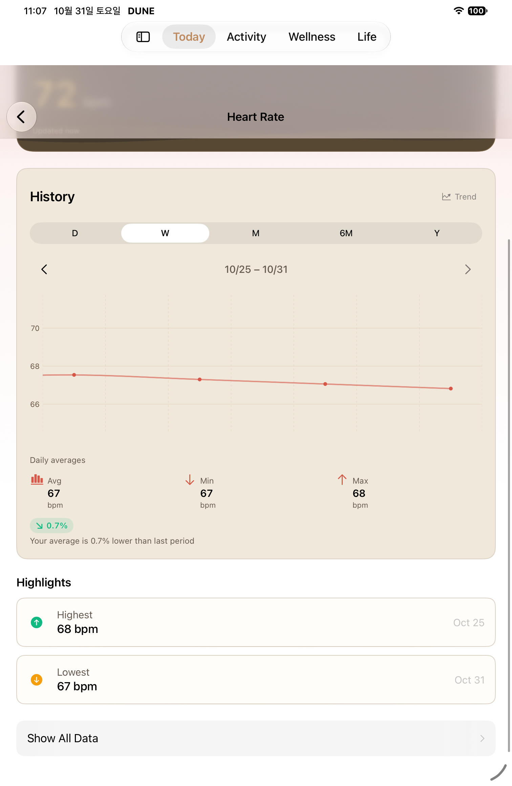
실제 소스 f9f1d852 · 2026-10-31T11:07:06.539000+09:00
동작 T06-heartRate-lower
원본 C0B09C76-344A-4B8A-8941-B3A0E77C679F.png
원본 크기로 보기 수면
Sleep · 입력 표시 기준 7h 54min
수면 · 기존 초기 화면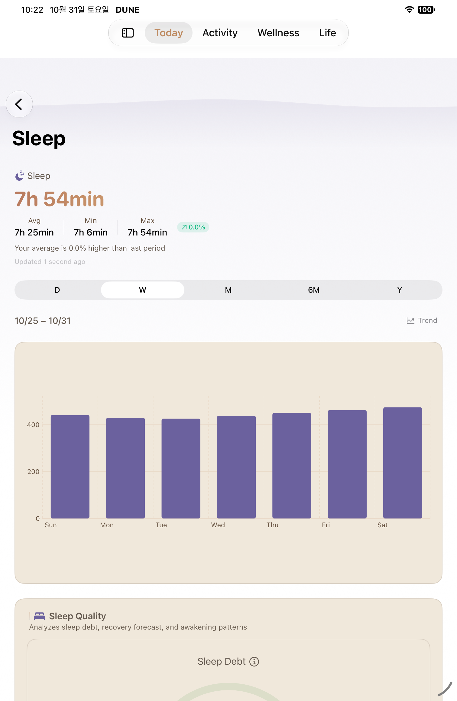
실제 소스 0dc77dc4 · 2026-10-31T10:22:28.774000+09:00
동작 T06-sleep-initial
원본 EDBAA79F-440E-4362-94D7-1B18640B340A.png
원본 크기로 보기수면 · 개편 초기 화면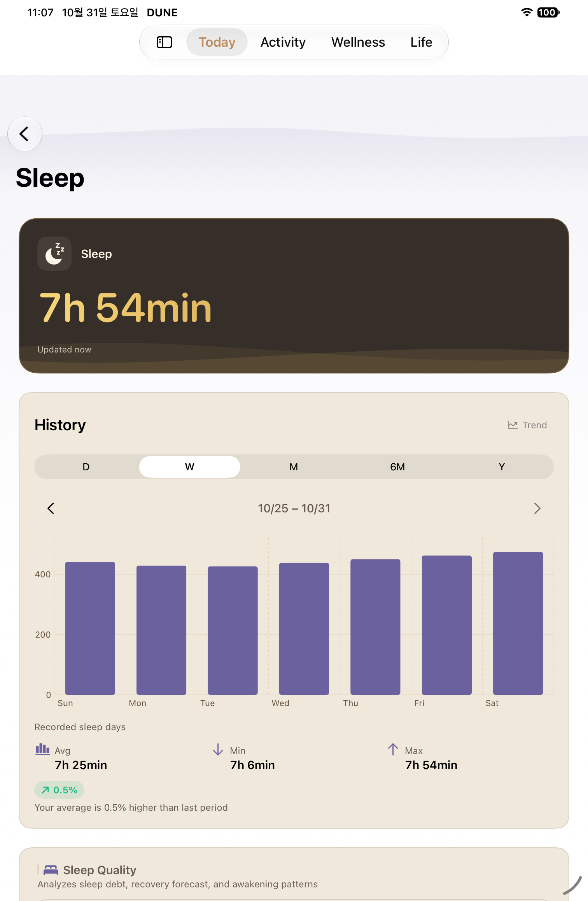
실제 소스 f9f1d852 · 2026-10-31T11:07:35.927000+09:00
동작 T06-sleep-initial
원본 06EA1512-12FA-4464-979D-095922810E5C.png
원본 크기로 보기
하단 화면 비교 펼치기
수면 · 기존 하단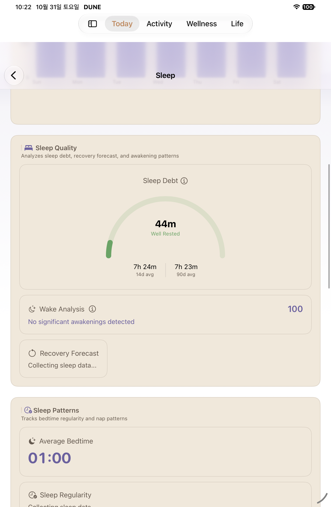
실제 소스 0dc77dc4 · 2026-10-31T10:22:32.041000+09:00
동작 T06-sleep-lower
원본 C23BB914-9B55-44D9-9512-B64DA63ECF14.png
원본 크기로 보기수면 · 개편 하단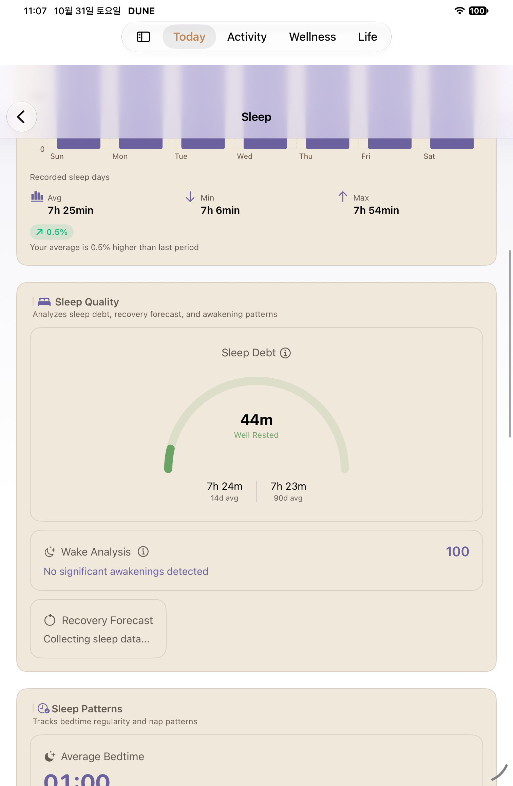
실제 소스 f9f1d852 · 2026-10-31T11:07:39.258000+09:00
동작 T06-sleep-lower
원본 B667DE42-552F-43A0-983C-CB4DCD2A113A.png
원본 크기로 보기 운동 시간
Exercise · 입력 표시 기준 42 min
운동 시간 · 기존 초기 화면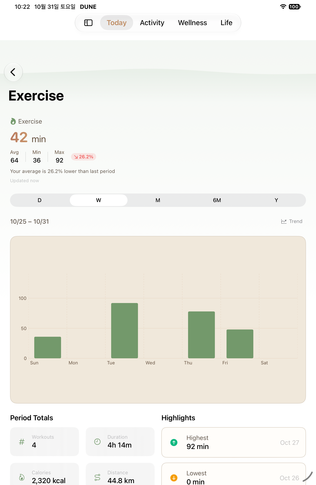
실제 소스 0dc77dc4 · 2026-10-31T10:22:55.618000+09:00
동작 T06-exercise-min-initial
원본 3C2D4E2E-EE0A-4AA4-9B2B-0CADB0C9A6B0.png
원본 크기로 보기운동 시간 · 개편 초기 화면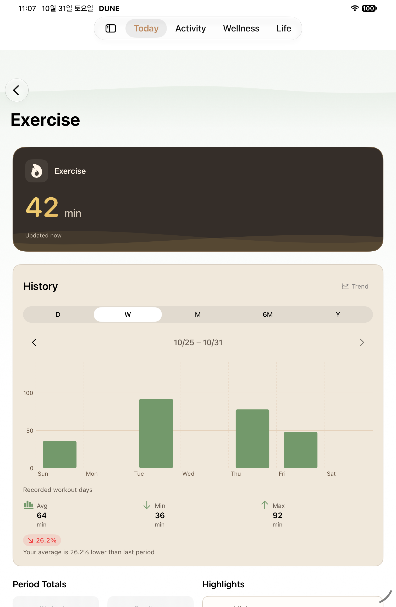
실제 소스 f9f1d852 · 2026-10-31T11:07:59.644000+09:00
동작 T06-exercise-min-initial
원본 F5CC6200-9130-4A12-8DF5-9C91606AAF7B.png
원본 크기로 보기
하단 화면 비교 펼치기
운동 시간 · 기존 하단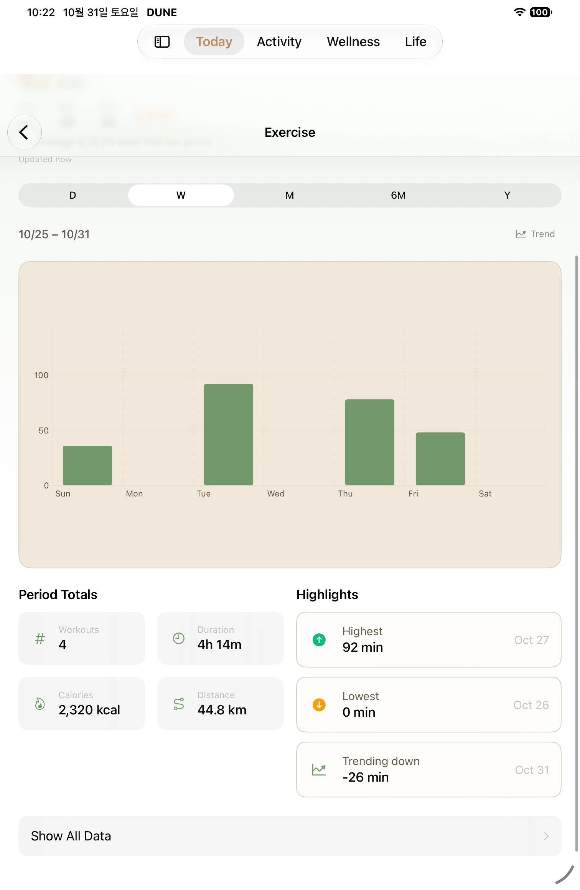
실제 소스 0dc77dc4 · 2026-10-31T10:22:56.907000+09:00
동작 T06-exercise-min-lower
원본 1DEC141B-31C8-41AB-947C-8BF115B0091B.png
원본 크기로 보기운동 시간 · 개편 하단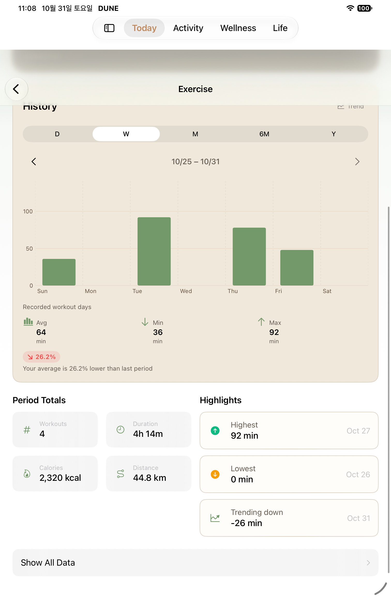
실제 소스 f9f1d852 · 2026-10-31T11:08:01.033000+09:00
동작 T06-exercise-min-lower
원본 2687438D-D77F-4782-8AAC-6748BE70EB8F.png
원본 크기로 보기 러닝 거리
Exercise · 입력 표시 기준 10.2 km
아래 개편 이미지는 거리 하이라이트를 수정한 61bdbf84 실행의 해당 거리 검사에서 수집했습니다. 이 실행은 거리 검사 2개 통과·비교 기준 검사 1개 실패이며, 전체 실행을 통과로 표시하지 않습니다.
러닝 거리 · 기존 초기 화면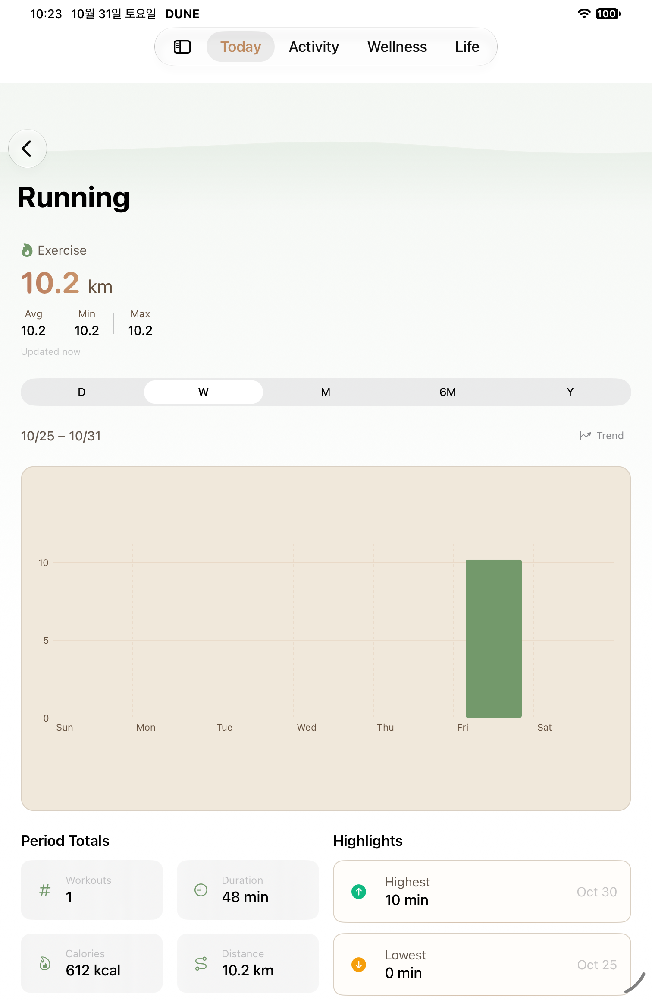
실제 소스 0dc77dc4 · 2026-10-31T10:23:20.849000+09:00
동작 T06-exercise-km-initial
원본 16AF8C41-B9F7-4176-B86C-0521CF5E42DE.png
원본 크기로 보기러닝 거리 · 개편 초기 화면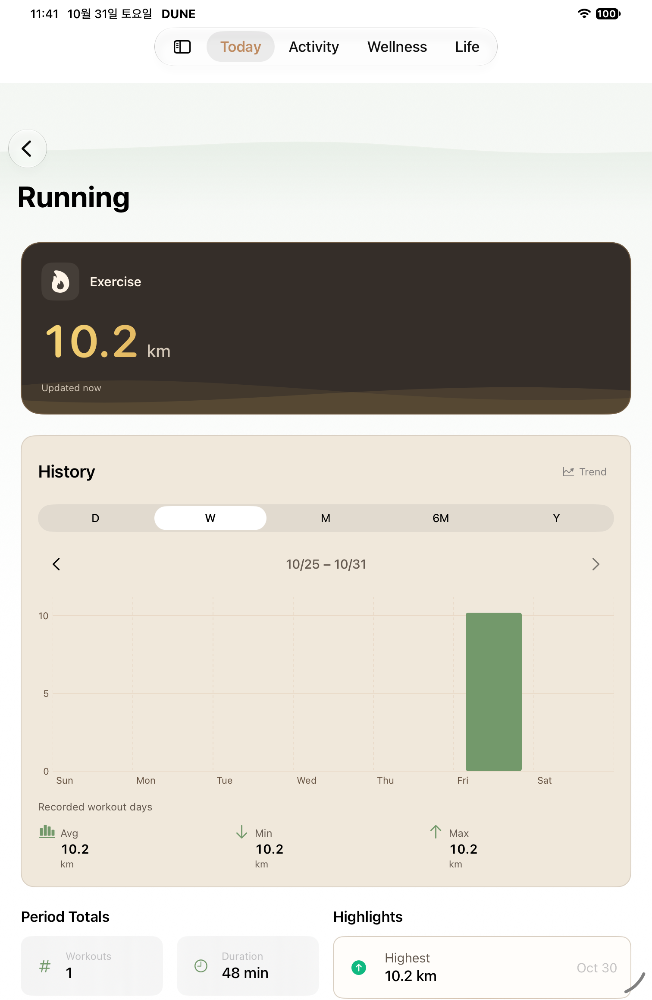
실제 소스 61bdbf84 · 2026-10-31T11:41:38.974000+09:00
동작 T06-exercise-km-initial
원본 7BCD856B-6D72-4A0A-A4C2-00AA1EAD22CD.png
원본 크기로 보기
하단 화면 비교 펼치기
러닝 거리 · 기존 하단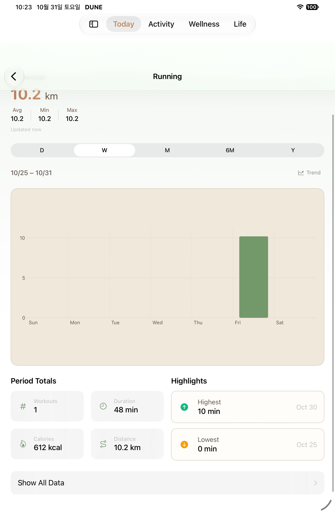
실제 소스 0dc77dc4 · 2026-10-31T10:23:22.057000+09:00
동작 T06-exercise-km-lower
원본 66D98C84-12C6-43B1-ADD5-989800FAFF20.png
원본 크기로 보기러닝 거리 · 개편 하단 · 거리 단위 수정 후실제 소스 61bdbf84 · 2026-10-31T11:41:43.445000+09:00
동작 T06-exercise-km-corrected-highest-distance
원본 7365BCF1-34B7-43FC-BD9A-10C2E1E3D80F.png
원본 크기로 보기 수정 전 과정 기록 · 최종 거리 단위 증거 아님
f9f1d852 행렬은 값·화면 이름을 확인했지만 거리 하이라이트에 min이 남아 있었습니다. 아래는 당시 상태를 보존한 자료입니다. 위의 수정 후 이미지와 구분합니다.
러닝 거리 · f9 수정 전 초기실제 소스 f9f1d852 · 2026-10-31T11:08:22.315000+09:00
동작 T06-exercise-km-initial
원본 A8EF42AA-B10E-4B2D-AE2C-E6F6613A5E9E.png
원본 크기로 보기러닝 거리 · f9 수정 전 하단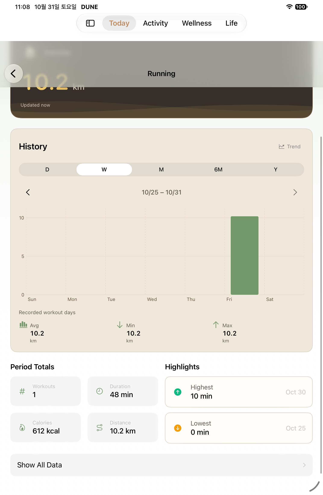
실제 소스 f9f1d852 · 2026-10-31T11:08:23.618000+09:00
동작 T06-exercise-km-lower
원본 0DE95471-90E4-47E0-A73E-2D77C84B873B.png
원본 크기로 보기 61bdbf84 일반 하단 체크포인트
러닝 거리 · 수정 후 일반 하단실제 소스 61bdbf84 · 2026-10-31T11:41:40.426000+09:00
동작 T06-exercise-km-lower
원본 83B2F81C-948E-4ED2-8D16-4C80C30ADE4E.png
원본 크기로 보기수영 거리
Exercise · 입력 표시 기준 1,314 m
기존 수영 화면은 1,314 m 입력을 1,314 min으로 잘못 표시한 원래 동작입니다. 개편 후에는 1,314 m, 거리 하이라이트는 1.3 km입니다. 기존의 잘못된 단위를 고쳐 그린 이미지가 아니며, 별도 기존 하단 촬영본은 없습니다.
아래 개편 이미지는 거리 하이라이트를 수정한 61bdbf84 실행의 해당 거리 검사에서 수집했습니다. 이 실행은 거리 검사 2개 통과·비교 기준 검사 1개 실패이며, 전체 실행을 통과로 표시하지 않습니다.
수영 거리 · 기존 초기 화면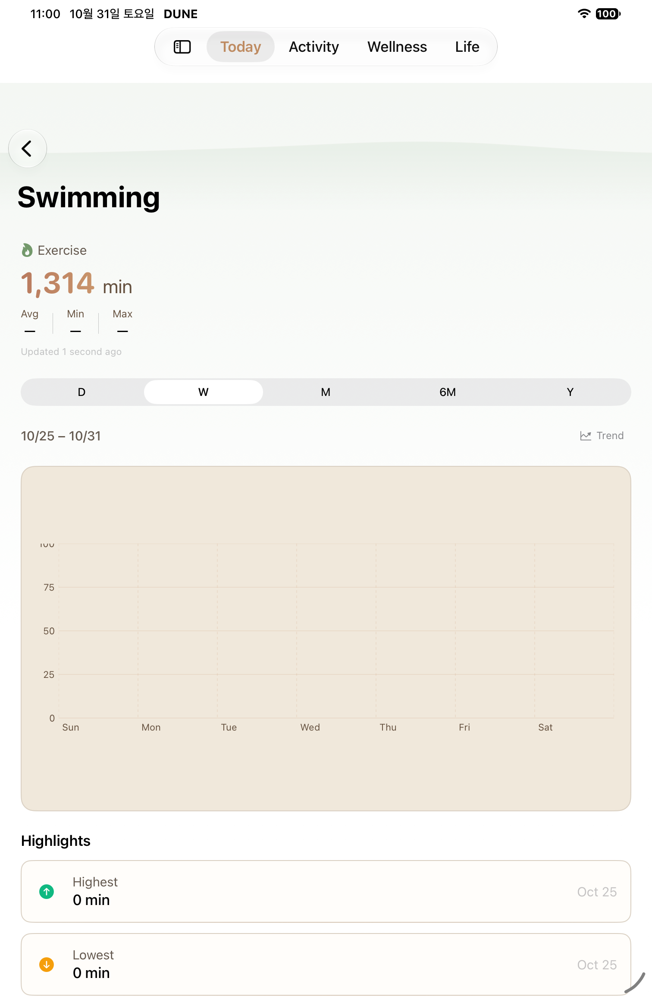
실제 소스 f06d4a73 · 2026-10-31T11:00:22.336000+09:00
동작 T06-original-swimming-input-1314m-rendered-min
원본 776F8108-ADF5-48E0-B85B-777166C8EF5E.png
원본 크기로 보기수영 거리 · 개편 초기 화면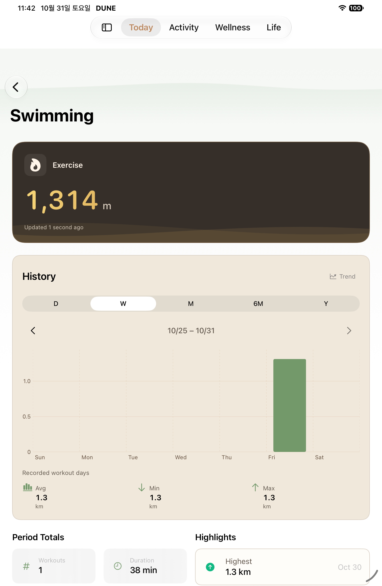
실제 소스 61bdbf84 · 2026-10-31T11:42:12.662000+09:00
동작 T06-exercise-m-initial
원본 13A8D0F6-9676-4BA2-8547-1185859E4F31.png
원본 크기로 보기
하단 화면 비교 펼치기
기존 · 하단 캡처 없음별도의 원본 하단 캡처가 없습니다.
다른 화면이나 초기 이미지로 대체하지 않았습니다.
수영 거리 · 개편 하단 · 거리 단위 수정 후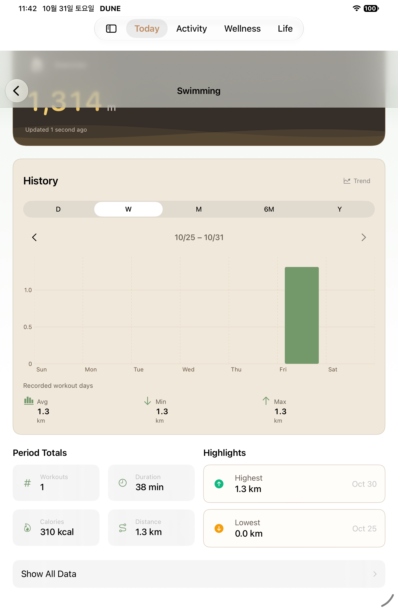
실제 소스 61bdbf84 · 2026-10-31T11:42:16.752000+09:00
동작 T06-exercise-m-corrected-highest-distance
원본 A3DFF19F-6459-478A-A351-4A20FBC3E307.png
원본 크기로 보기 수정 전 과정 기록 · 최종 거리 단위 증거 아님
f9f1d852 행렬은 값·화면 이름을 확인했지만 거리 하이라이트에 min이 남아 있었습니다. 아래는 당시 상태를 보존한 자료입니다. 위의 수정 후 이미지와 구분합니다.
수영 거리 · f9 수정 전 초기실제 소스 f9f1d852 · 2026-10-31T11:08:48.075000+09:00
동작 T06-exercise-m-initial
원본 E899DC82-76DF-4939-BB45-980A59EFC33B.png
원본 크기로 보기수영 거리 · f9 수정 전 하단실제 소스 f9f1d852 · 2026-10-31T11:08:49.352000+09:00
동작 T06-exercise-m-lower
원본 635A2F91-EB63-49C8-A4D7-11D98C154686.png
원본 크기로 보기 61bdbf84 일반 하단 체크포인트
수영 거리 · 수정 후 일반 하단실제 소스 61bdbf84 · 2026-10-31T11:42:13.925000+09:00
동작 T06-exercise-m-lower
원본 B73559ED-4F13-4FC1-8CD5-C25E83C5EE35.png
원본 크기로 보기걸음 수
Steps · 입력 표시 기준 8,200 steps
걸음 수 · 기존 초기 화면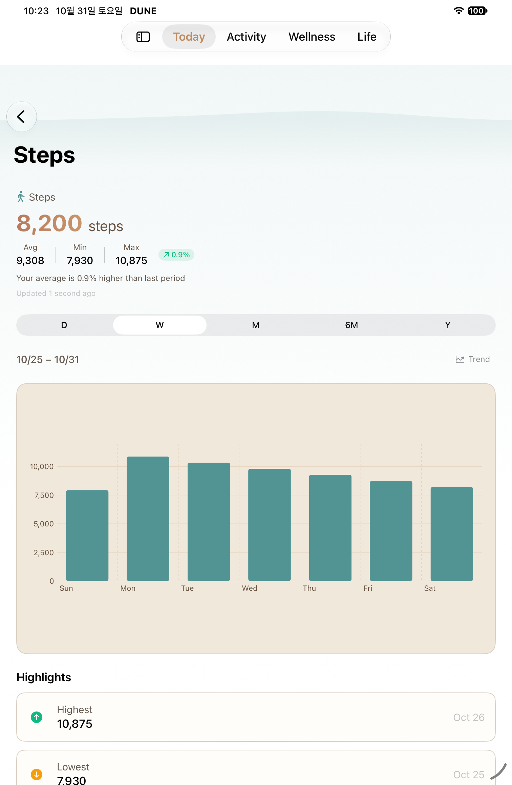
실제 소스 0dc77dc4 · 2026-10-31T10:23:43.748000+09:00
동작 T06-steps-initial
원본 B62C1CAA-BE9D-432B-BA0B-423ADABA8D2A.png
원본 크기로 보기걸음 수 · 개편 초기 화면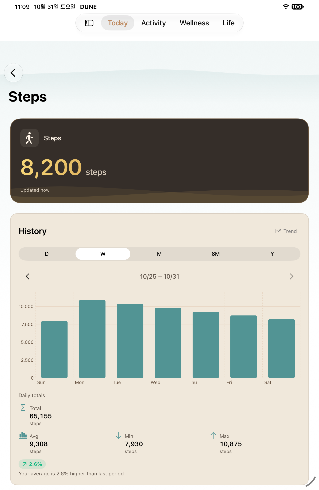
실제 소스 f9f1d852 · 2026-10-31T11:09:13.474000+09:00
동작 T06-steps-initial
원본 DF07F04A-8B1F-438C-B804-539C285EC6D3.png
원본 크기로 보기
하단 화면 비교 펼치기
걸음 수 · 기존 하단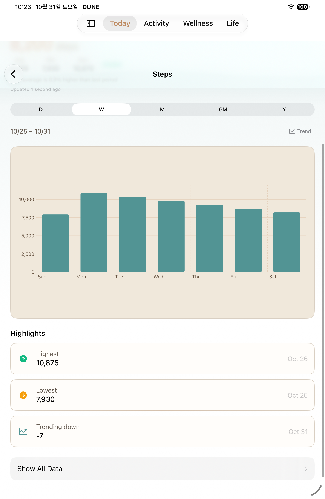
실제 소스 0dc77dc4 · 2026-10-31T10:23:44.995000+09:00
동작 T06-steps-lower
원본 A6544B23-1A7F-4099-B58D-B7B26D81D420.png
원본 크기로 보기걸음 수 · 개편 하단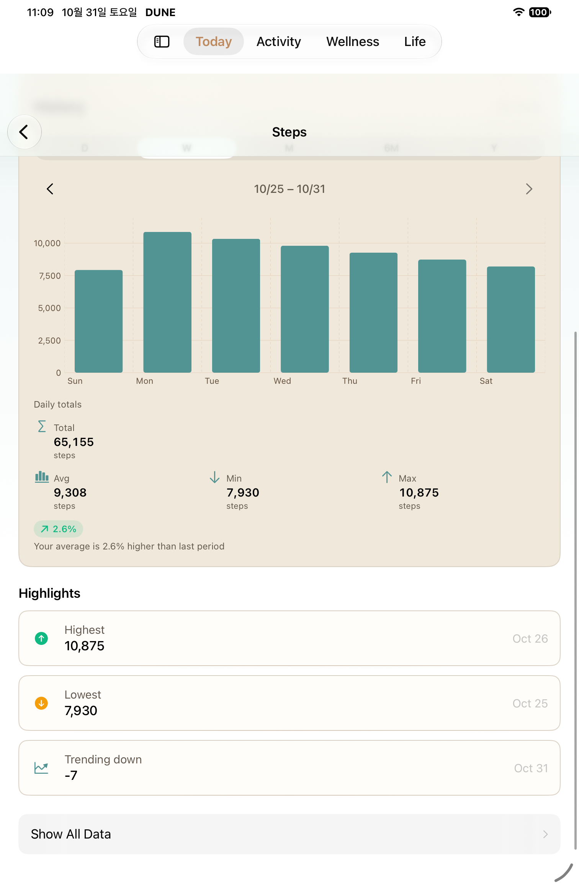
실제 소스 f9f1d852 · 2026-10-31T11:09:14.953000+09:00
동작 T06-steps-lower
원본 91FA88A5-0B82-47AF-B513-748FFC016456.png
원본 크기로 보기 체중
Weight · 입력 표시 기준 78.4 kg
체중 · 기존 초기 화면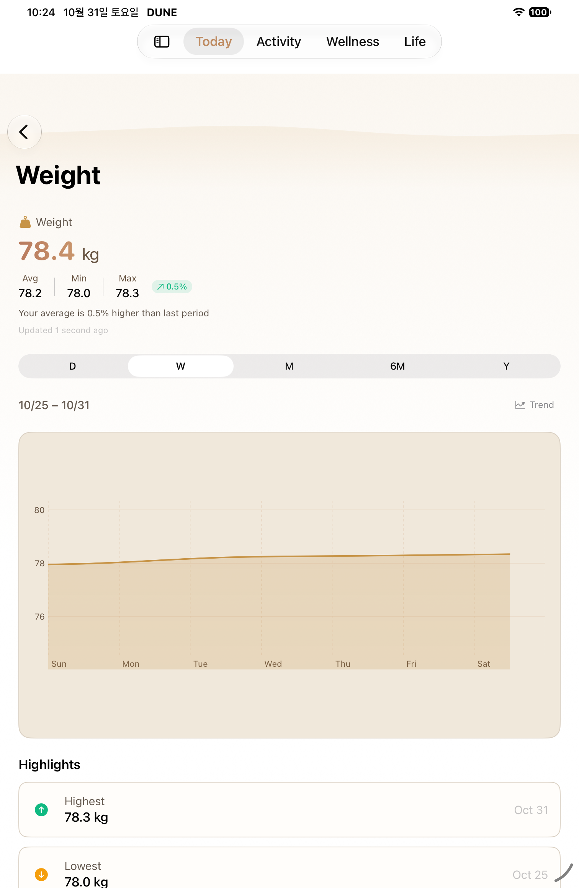
실제 소스 0dc77dc4 · 2026-10-31T10:24:09.415000+09:00
동작 T06-weight-initial
원본 3DAF9B93-8CCB-4095-A6B3-3FAB6A6FF82F.png
원본 크기로 보기체중 · 개편 초기 화면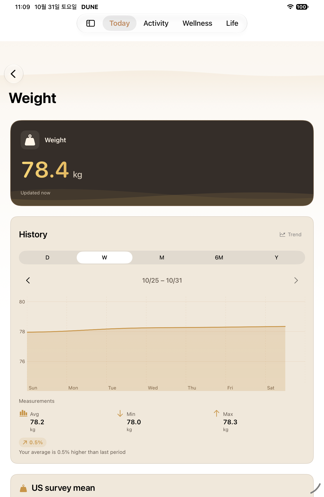
실제 소스 f9f1d852 · 2026-10-31T11:09:37.724000+09:00
동작 T06-weight-initial
원본 7E6370E7-04BB-4593-BB72-2C13095CF328.png
원본 크기로 보기
하단 화면 비교 펼치기
체중 · 기존 하단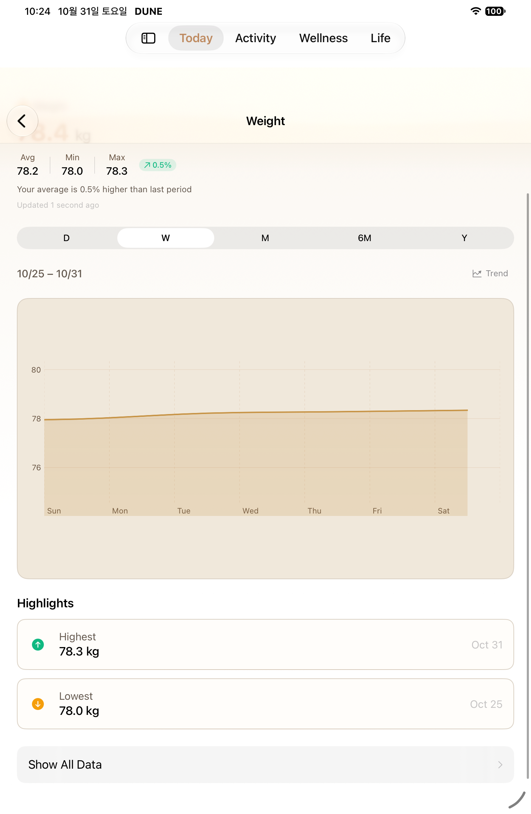
실제 소스 0dc77dc4 · 2026-10-31T10:24:10.663000+09:00
동작 T06-weight-lower
원본 F9BAD12D-D332-4538-B012-ED00A7251E6D.png
원본 크기로 보기체중 · 개편 하단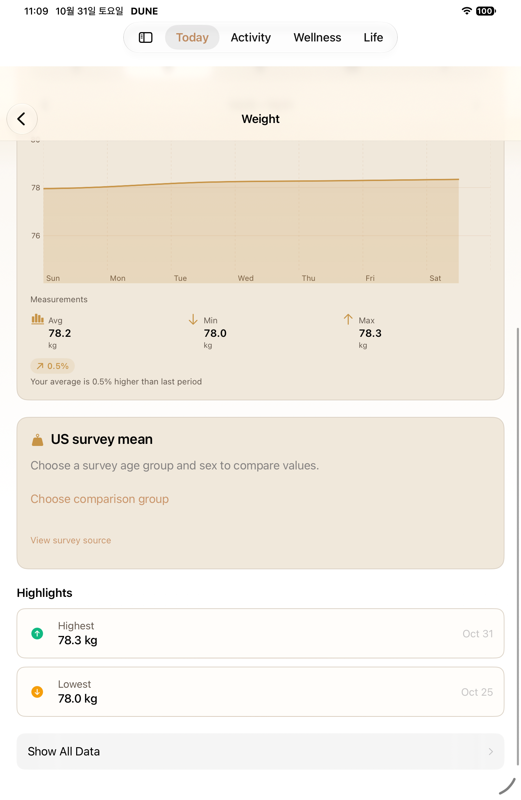
실제 소스 f9f1d852 · 2026-10-31T11:09:39.325000+09:00
동작 T06-weight-lower
원본 319E752B-4C85-4BD6-A919-7FED22967A62.png
원본 크기로 보기 BMI
BMI · 입력 표시 기준 24.7
BMI · 기존 초기 화면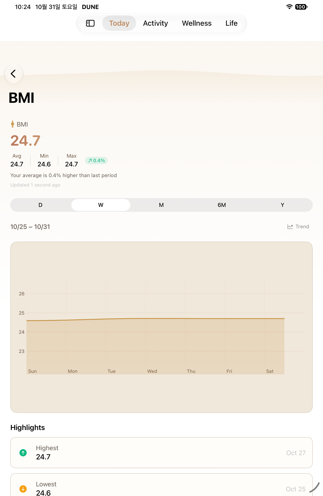
실제 소스 0dc77dc4 · 2026-10-31T10:24:34.378000+09:00
동작 T06-bmi-initial
원본 0D3104F6-46AB-49CA-AF65-CDD3996F0E99.png
원본 크기로 보기BMI · 개편 초기 화면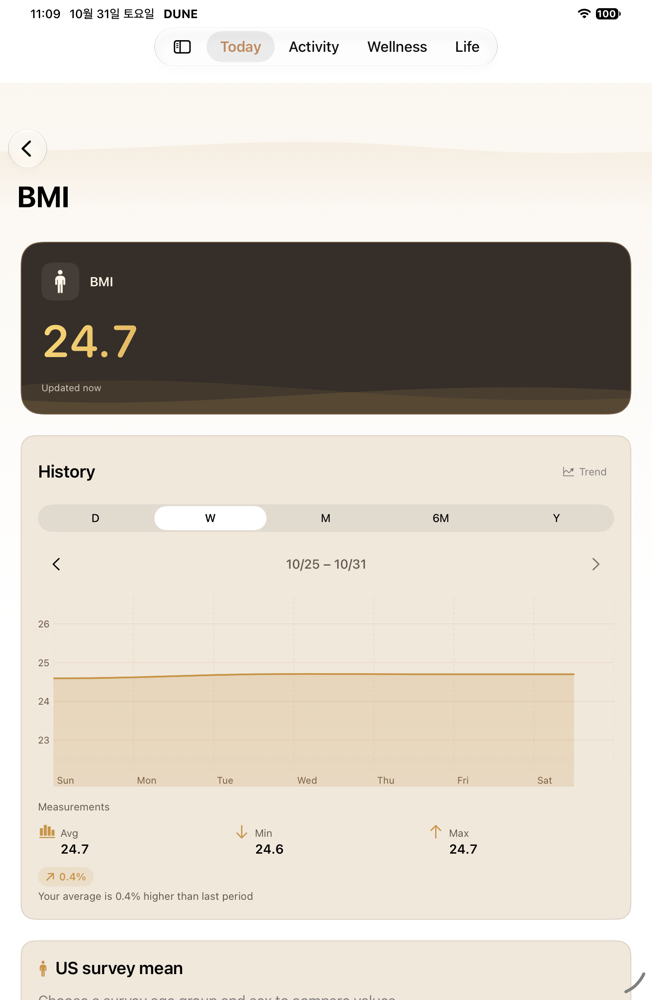
실제 소스 f9f1d852 · 2026-10-31T11:09:53.009000+09:00
동작 T06-bmi-initial
원본 F702BD9D-3890-4A9A-AA92-7C1D38B498A1.png
원본 크기로 보기
하단 화면 비교 펼치기
BMI · 기존 하단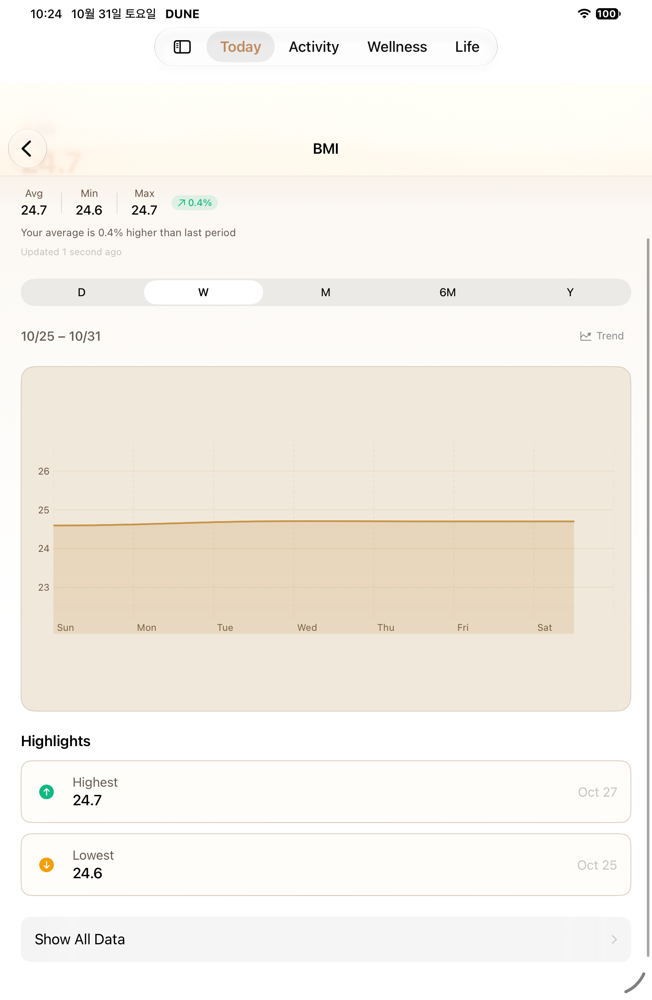
실제 소스 0dc77dc4 · 2026-10-31T10:24:35.612000+09:00
동작 T06-bmi-lower
원본 434CBBFB-2A01-4AC4-85AE-DD2E6579E616.png
원본 크기로 보기BMI · 개편 하단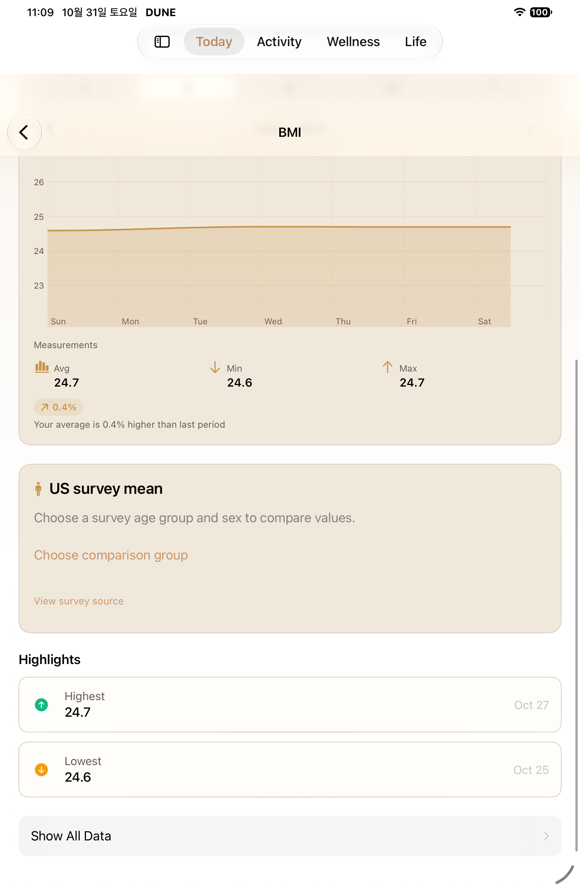
실제 소스 f9f1d852 · 2026-10-31T11:09:54.604000+09:00
동작 T06-bmi-lower
원본 BB5CBF59-6D0E-4354-B3D3-C8A8D8889076.png
원본 크기로 보기 체지방률
Body Fat · 입력 표시 기준 17.8 %
체지방률 · 기존 초기 화면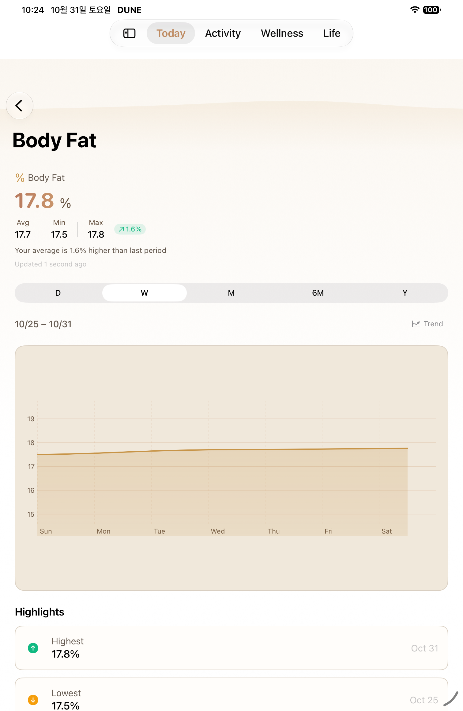
실제 소스 0dc77dc4 · 2026-10-31T10:24:49.146000+09:00
동작 T06-bodyFat-initial
원본 E1EF9152-D5DD-4AB7-80D8-595E35690F8C.png
원본 크기로 보기체지방률 · 개편 초기 화면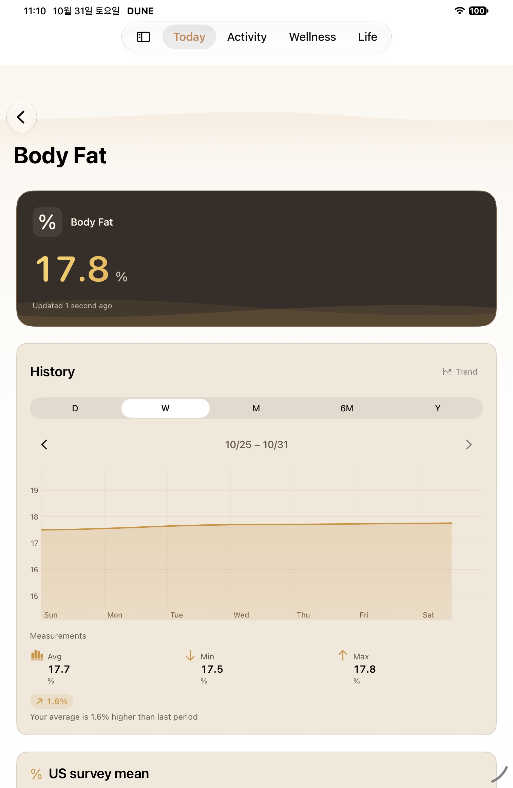
실제 소스 f9f1d852 · 2026-10-31T11:10:19.050000+09:00
동작 T06-bodyFat-initial
원본 D7FE86D7-3DB6-4C0D-AF5B-208FDF9C742D.png
원본 크기로 보기
하단 화면 비교 펼치기
체지방률 · 기존 하단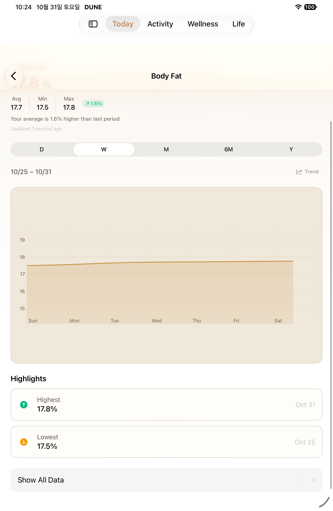
실제 소스 0dc77dc4 · 2026-10-31T10:24:50.391000+09:00
동작 T06-bodyFat-lower
원본 E554CDA8-97AB-4129-84A5-D592E5469431.png
원본 크기로 보기체지방률 · 개편 하단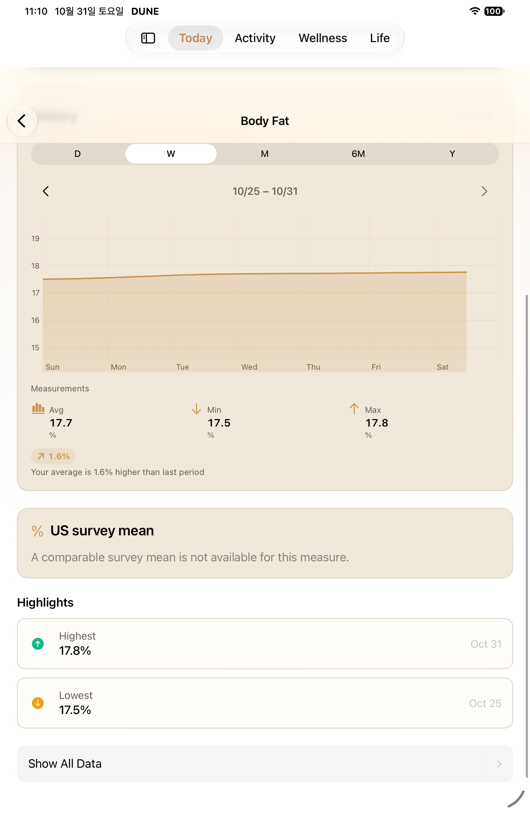
실제 소스 f9f1d852 · 2026-10-31T11:10:20.621000+09:00
동작 T06-bodyFat-lower
원본 0C2F3010-5609-4DA5-8AAC-B54759C9BC39.png
원본 크기로 보기 제지방량
Lean Body Mass · 입력 표시 기준 63.1 kg
제지방량 · 기존 초기 화면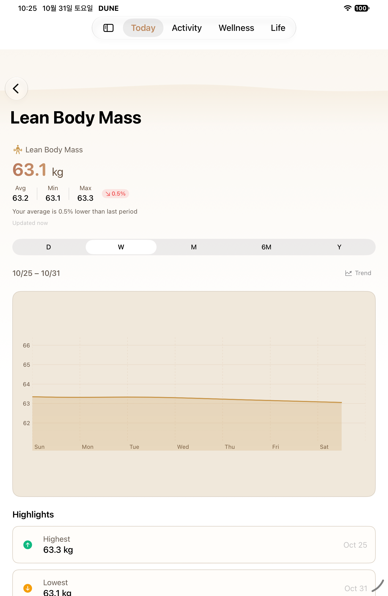
실제 소스 0dc77dc4 · 2026-10-31T10:25:08.761000+09:00
동작 T06-leanBodyMass-initial
원본 FB940397-C9CD-455A-BD37-EBDFB5D6FDC6.png
원본 크기로 보기제지방량 · 개편 초기 화면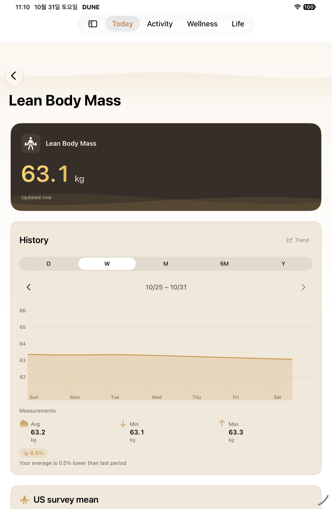
실제 소스 f9f1d852 · 2026-10-31T11:10:45.224000+09:00
동작 T06-leanBodyMass-initial
원본 5AE76CE2-38D1-4468-B786-76FE1BF135A5.png
원본 크기로 보기
하단 화면 비교 펼치기
제지방량 · 기존 하단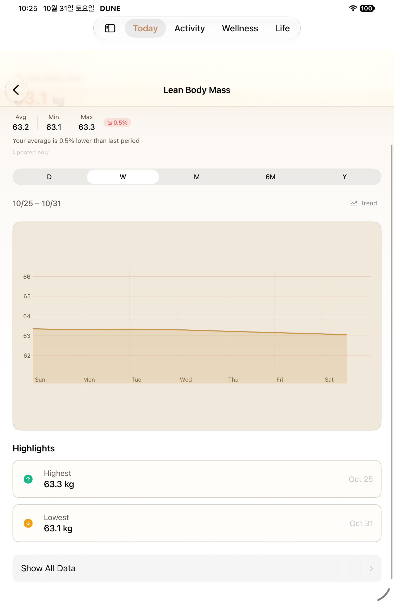
실제 소스 0dc77dc4 · 2026-10-31T10:25:09.990000+09:00
동작 T06-leanBodyMass-lower
원본 BA6C50A0-CAC8-4FB3-B07B-13FC0753D11A.png
원본 크기로 보기제지방량 · 개편 하단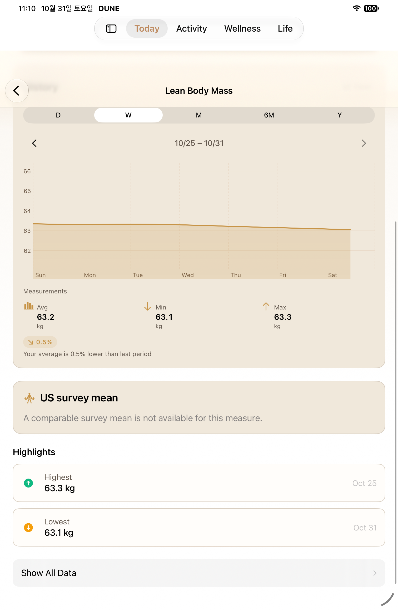
실제 소스 f9f1d852 · 2026-10-31T11:10:46.679000+09:00
동작 T06-leanBodyMass-lower
원본 150D8FCD-6FB4-451C-99AD-C013D6C06180.png
원본 크기로 보기 혈중 산소
Blood Oxygen · 입력 표시 기준 98 %
혈중 산소 · 기존 초기 화면실제 소스 0dc77dc4 · 2026-10-31T10:25:25.461000+09:00
동작 T06-spo2-initial
원본 BC8E07F5-CBA1-44EE-9BDE-312880CA200A.png
원본 크기로 보기혈중 산소 · 개편 초기 화면실제 소스 f9f1d852 · 2026-10-31T11:11:09.577000+09:00
동작 T06-spo2-initial
원본 4706D135-A1E6-4761-8A95-49890EE42E05.png
원본 크기로 보기
하단 화면 비교 펼치기
혈중 산소 · 기존 하단실제 소스 0dc77dc4 · 2026-10-31T10:25:26.709000+09:00
동작 T06-spo2-lower
원본 DC613C7D-656D-409E-B1AF-6B7DF07F662E.png
원본 크기로 보기혈중 산소 · 개편 하단실제 소스 f9f1d852 · 2026-10-31T11:11:10.885000+09:00
동작 T06-spo2-lower
원본 6D1648B4-6C2E-492C-93E2-A2AF84DC4C32.png
원본 크기로 보기 호흡수
Respiratory Rate · 입력 표시 기준 15 breaths/min
호흡수 · 기존 초기 화면실제 소스 0dc77dc4 · 2026-10-31T10:25:42.140000+09:00
동작 T06-respiratoryRate-initial
원본 23E966E4-929B-490A-B89B-39C71F6B149A.png
원본 크기로 보기호흡수 · 개편 초기 화면실제 소스 f9f1d852 · 2026-10-31T11:11:24.487000+09:00
동작 T06-respiratoryRate-initial
원본 9AB8FCD1-CB56-43D3-823F-5AAE01637B8A.png
원본 크기로 보기
하단 화면 비교 펼치기
호흡수 · 기존 하단실제 소스 0dc77dc4 · 2026-10-31T10:25:43.373000+09:00
동작 T06-respiratoryRate-lower
원본 4E8DE9F4-15A7-4AC0-BAA5-BB99FD911551.png
원본 크기로 보기호흡수 · 개편 하단실제 소스 f9f1d852 · 2026-10-31T11:11:25.809000+09:00
동작 T06-respiratoryRate-lower
원본 BBD574E1-D2D8-47B4-B7C6-D87379A50ECF.png
원본 크기로 보기 VO₂ Max
VO2 Max · 입력 표시 기준 44.7 ml/kg/min
VO₂ Max · 기존 초기 화면실제 소스 0dc77dc4 · 2026-10-31T10:26:06.849000+09:00
동작 T06-vo2Max-initial
원본 D440DC33-8A25-4437-B80D-B0D9232C0E32.png
원본 크기로 보기VO₂ Max · 개편 초기 화면실제 소스 f9f1d852 · 2026-10-31T11:11:47.598000+09:00
동작 T06-vo2Max-initial
원본 E441C474-BBBC-466B-9904-B84D5E107C89.png
원본 크기로 보기
하단 화면 비교 펼치기
VO₂ Max · 기존 하단실제 소스 0dc77dc4 · 2026-10-31T10:26:08.093000+09:00
동작 T06-vo2Max-lower
원본 620EC855-9BFF-431E-B201-7B846E2910A0.png
원본 크기로 보기VO₂ Max · 개편 하단실제 소스 f9f1d852 · 2026-10-31T11:11:48.869000+09:00
동작 T06-vo2Max-lower
원본 CB380DEF-DCBB-496B-BABA-E738EDE5D3CE.png
원본 크기로 보기 심박 회복
HR Recovery · 입력 표시 기준 24 bpm
심박 회복 · 기존 초기 화면실제 소스 0dc77dc4 · 2026-10-31T10:26:31.325000+09:00
동작 T06-heartRateRecovery-initial
원본 69265A97-EC09-4609-B9F7-1C3C103EFAFC.png
원본 크기로 보기심박 회복 · 개편 초기 화면실제 소스 f9f1d852 · 2026-10-31T11:12:12.460000+09:00
동작 T06-heartRateRecovery-initial
원본 3647B8BB-759A-4628-A15A-A5A46B531F57.png
원본 크기로 보기
하단 화면 비교 펼치기
심박 회복 · 기존 하단실제 소스 0dc77dc4 · 2026-10-31T10:26:32.572000+09:00
동작 T06-heartRateRecovery-lower
원본 D82E1D3F-7FC0-401E-BA95-8EC5FD549CE4.png
원본 크기로 보기심박 회복 · 개편 하단실제 소스 f9f1d852 · 2026-10-31T11:12:13.760000+09:00
동작 T06-heartRateRecovery-lower
원본 4208D54C-F97C-4E13-846A-35577C9B27D7.png
원본 크기로 보기 손목 온도
Wrist Temp · 입력 표시 기준 -0.3 °C
손목 온도 · 기존 초기 화면실제 소스 0dc77dc4 · 2026-10-31T10:26:55.345000+09:00
동작 T06-wristTemperature-initial
원본 053C5DA9-6BBF-4CC7-8F57-13B861CD5E8D.png
원본 크기로 보기손목 온도 · 개편 초기 화면실제 소스 f9f1d852 · 2026-10-31T11:12:36.667000+09:00
동작 T06-wristTemperature-initial
원본 103074AB-BBCB-454A-B94C-1B8A72894301.png
원본 크기로 보기
하단 화면 비교 펼치기
손목 온도 · 기존 하단실제 소스 0dc77dc4 · 2026-10-31T10:26:56.594000+09:00
동작 T06-wristTemperature-lower
원본 C57910E1-348F-4B00-A8D7-E40A7532D013.png
원본 크기로 보기손목 온도 · 개편 하단실제 소스 f9f1d852 · 2026-10-31T11:12:37.957000+09:00
동작 T06-wristTemperature-lower
원본 28B5BB9A-B249-4810-8546-DA9C311C8FFF.png
원본 크기로 보기 호흡 장애
Breathing Disturbances · 입력 표시 기준 1.2 /hr
호흡 장애 · 기존 초기 화면실제 소스 0dc77dc4 · 2026-10-31T10:27:11.855000+09:00
동작 T06-breathingDisturbances-initial
원본 ED1E6444-D034-41C7-BC69-378D579826B3.png
원본 크기로 보기호흡 장애 · 개편 초기 화면실제 소스 f9f1d852 · 2026-10-31T11:13:01.478000+09:00
동작 T06-breathingDisturbances-initial
원본 DD3B211D-F48E-412A-AC6E-4A876E9B9C73.png
원본 크기로 보기
하단 화면 비교 펼치기
호흡 장애 · 기존 하단실제 소스 0dc77dc4 · 2026-10-31T10:27:13.348000+09:00
동작 T06-breathingDisturbances-lower
원본 8727309F-0B2B-4DE7-8A54-70D4DADD0821.png
원본 크기로 보기호흡 장애 · 개편 하단실제 소스 f9f1d852 · 2026-10-31T11:13:02.968000+09:00
동작 T06-breathingDisturbances-lower
원본 87764E54-CCB6-4558-863E-CEDD9C51BDBD.png
원본 크기로 보기 신체 데이터 비교 · 실제 출처 패널
체중 하단에는 미국 조사 평균이라는 표시와 비교 집단 선택·출처 경로가 있습니다. 아래는 별도 3d299a50 비교 기준 검사에서 실제로 열린 출처 패널입니다. 사진은 표본·조사 기간·대상 제외·평균과 건강 목표의 차이를 설명합니다. 이 캡처를 의료적 적정 범위나 한국 인구 평균으로 해석하지 않습니다.
체중 · 실제 Survey source 패널실제 소스 3d299a50 · 2026-10-31T11:57:15.519000+09:00
동작 screen-0-1512x2316-before teardown -[MetricDetailRedesignTests testWeightPeerCriteriaCancelApplyAndSource]
원본 8C92B382-1568-4C12-B341-676F912691C7.png
원본 크기로 보기
실행 결과와 남은 범위
| 실제 소스 | 수집 범위와 결과 |
|---|
| 0dc77dc4 | 원래 17개 지표를 1개 메서드에서 순회 · 1개 검사 통과. |
| f06d4a73 | 별도 수영 입력의 원래 min 표시 기록 · 1개 검사 통과. 올바른 m 단위 통과라는 뜻이 아닙니다. |
| f9f1d852 | 18개 지표 행렬 1개 + 비교 기준 1개 · 총 2개 검사 통과. 당시 거리 하이라이트의 min 표시는 아래 수정 실행으로 구분했습니다. |
| 61bdbf84 | 러닝·수영 거리 검사 2개 통과, 비교 기준 Apply assertion 1개 실패 · 전체 실행 실패 유지. |
| 3d299a50 | 비교 기준 선택·취소·적용·출처의 별도 조건부 검사 1개 통과. 앞선 실패 실행을 소급해 통과로 바꾸지 않습니다. |
이 10월 31일 지표 행렬은 새 실행·다른 기기·어두운 화면·최대 글씨·전체 회귀 완료를 뜻하지 않습니다. 위의 별도 HRV 네 기기 확인 범위와 구분합니다. 각 초기·하단 이미지는 촬영한 스크롤 위치이며 모든 기능이 한 장에 노출되는 것은 아닙니다. 모든 원본 경로·동작·날짜·해시·검토 범위는 evidence.json에 보존했습니다.